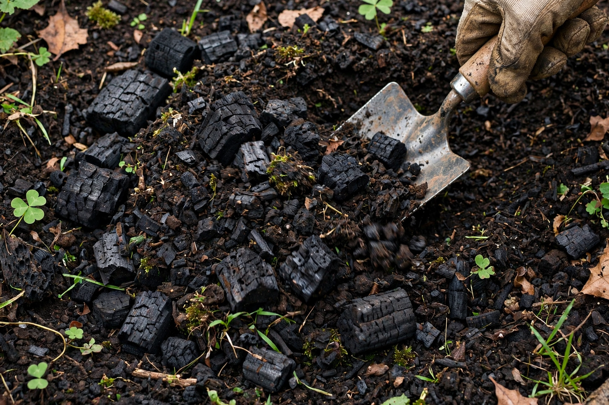

Biochar
From Wikipedia, the free encyclopedia

Biochar is a charcoal-like material produced by Pyrolysis of biomass — heating wood, crop residues or manures with little or no oxygen — and used as a soil amendment and a form of Carbon sequestration. Inspired by the fertile terra preta soils of the Amazon, built over centuries by indigenous peoples, biochar's porous structure retains water and nutrients, hosts microbes and persists in soil for centuries to millennia, making it one of the more durable proposed carbon-removal methods.
Production and properties
Slow pyrolysis at 350–700 °C yields roughly equal parts biochar, bio-oil and syngas (the gases often fuelling the process). Properties vary hugely with feedstock and temperature; chars are typically alkaline, high in surface area and cation-exchange capacity, benefiting weathered tropical soils most and showing mixed results in temperate ones.
Climate role
Biochar features in IPCC pathways as a carbon dioxide removal option with gigatonne-scale theoretical potential, bounded by sustainable biomass supply and land competition; carbon-credit methodologies (and the EU's carbon-removal certification) are standardising permanence claims — the debate being whether 'centuries' is durable enough and how co-benefits (yield, methane suppression in rice) count.